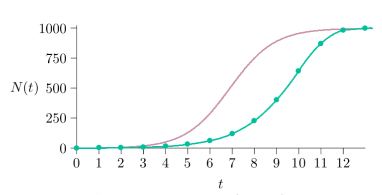

dt = 1
print(N);
time = seq(from=0,to=20,by=dt);
for(t in time){
dN = (r + s * N) * N; N = N + dN;
if(N < 0) N = 0; # <-- addition
print(N)
}5 Differential and difference forms
\[ \begin{aligned} \frac{1}{N}\frac{\Delta N}{\Delta t} &= r + sN && \leftarrow \text{Difference equation model} \\[1em] \frac{1}{N}\frac{dN}{dt} &= r + sN && \leftarrow \text{Differential equation model} \end{aligned} \]
Recall that the delta sign (\(\Delta\)) means change in or the difference. Compare the difference equation with the differential form, which uses the terminology \(dN\) and \(dt\). These represent infinitesimally small time steps, corresponding to our common-sense perception of time as divisible ever more finely without limit. In differential equations populations change smoothly rather than in finite steps—growth approximating that of organisms that can reproduce at any time, such as bacterial or human populations.
It turns out that differential equations are harder for computers to solve than difference equations. Computers cannot make infinitely fine time steps, but have to approximate by using very small time steps instead. On the other hand, difference equations can be harder to solve mathematically.
Program 5.1 is computer code for a difference equation presented earlier in Chapter 4, which levelled off at 1000, but with an additional if() statement to catch negative population size. If the population is far above its carrying capacity, the calculation could show such a strong decline that the next year’s population would be negative—meaning that the population would die out completely. The marked addition just avoids projecting negative populations, which are mathematically possible but biologically meaningless. Program 5.2 is similar code for the corresponding differential equation, with differences marked.
dt = 1 / (24 * 60 * 60); # <-- changed (one second, in days)
print(N);
time = seq(from=0,to=20,by=dt); # <-- changed
for(t in time){
dN = (r + s * N) * N * dt; N = N + dN; # <-- changed
if(N < 0) N = 0;
print(N)
}
Warning
Feel free to run the above loop on your own machines, but note that we have defined our time vector to contain every single second from the beginning of day 0 to the end of day 20. It will take some time for R to print all the time steps. The calculation is fast, but printing out 1,728,000 lines of text is not.
This intends to model infinitely small time steps. Of course it cannot do that exactly, but must settle for very small time steps. Instead of \(dt = 1\), for example, representing one year, it is set here to one second: one day divided by 24 hours, 60 minutes, and 60 seconds. Over 20 days that makes \(20 \times 24 \times 60 \times 60 = 1{,}728{,}000\) time steps. This is hardly infinitely small, but for populations of bacteria and humans it is close enough for practical purposes. Still, it is important to check for negative populations in case the time step is not small enough.
How small is close enough to infinitely small? is the question. To find out, you can set the time step to something small and run the code, which will produce a set of population values through time. Then set the step smaller still and run the code again. It will run more slowly because it is calculating more steps, but if essentially the same answer appears—if the answer “converges”—then you can make the step larger again, speeding the calculation. With a few trials you can find a time step that is small enough to give accurate answers but large enough to allow your code to run reasonably fast.

Figure 5.1 shows the results of running the differential equation version of the program (Program 5.2, in maroon) versus the difference equation version (Program 5.1, in green). The differential equation has the same parameters and general shape, but the population approaches its carrying capacity more quickly. Because the differential time steps produce offspring earlier—not waiting for the end of the step—offspring are available to reproduce earlier, and so forth.
This particular method for differential equations is called “Euler’s method” (pronounced “Oiler’s”), a basic approach not often used in the twentieth century because computers not so long ago were millions of times slower than they are now. Today this method is often fast enough, and is desirable because of its relative simplicity.
5.1 A mathematical view
Differential equations can be amenable to mathematical analysis. To repeat, here is the differential population model.
\[ \frac{1}{N}\frac{dN}{dt} = r + sN \tag{5.1}\]
It turns out there is something simple about infinity, and when time steps are infinitely small the methods of calculus developed over the centuries can solve this differential equation exactly, mathematically. If you apply a symbolic mathematics computer package, or the methods for integration of functions developed in calculus, you can find the population value \(N\) for any future time \(t\). This is called the “solution” to the differential equation.
\[ N(t) = \frac{1}{(\frac{s}{r}+\frac{1}{N_0})e^{-rt}-\frac{s}{r}} \tag{5.2}\]
Most differential equations cannot be solved this way but, fortunately, the basic equations of ecology can. This solution becomes useful in projecting forward or otherwise understanding the behavior of a population. If you know the starting \(N\), \(s\), and \(r\), you can plug them into the formula to find the population size at every time in the future, without stepping through the differential equation.
5.2 Exponential solution
To think about this mathematically, first set \(s\) to zero, meaning no density dependence. The differential equation then reduces to \(\frac{1}{N}\frac{dN}{dt} = r\), and if you replace \(s\) in the equation above with 0 you get this:
\[ \begin{aligned} N(t) &= \frac{1}{(\frac{0}{r}+\frac{1}{N_0})e^{-rt}-\frac{0}{r}} \\ &= \frac{1}{\frac{1}{N_0}e^{-rt}} \\ &= N_0e^{rt} \end{aligned} \]
A measure often used for exponential growth, and that we will apply later in this book, is “doubling time”—the time that must elapse for the population to double. For exponential growth, this is always the same, no matter how large or small the population. For exponential growth, the equation above is:
\[ N(t) = N_0e^{rt} \tag{5.3}\]
\(N_0\) is the starting population at time 0, \(N(t)\) is the population at any time \(t\), and \(r\) is the constant growth rate—the “intrinsic rate of natural increase.” How much time, \(\tau\), will elapse before the population doubles? At some time \(t\), the population will be \(N(t)\), and at the later time \(t+\tau\), the population will be \(N(t+\tau)\). The question to be answered is this: for what \(\tau\) will the ratio of those two populations be 2?
\[ \frac{N(t+\tau)}{N(t)} = 2 \]
Substituting the right-hand side of Equation 5.3 from above gives:
\[ \frac{N_0e^{r(t+\tau)}}{N_0e^{rt}} = 2 \]
The factor \(N_0\) cancels out, and taking the natural logarithms of both sides gives:
\[ \ln \frac{e^{r(t+\tau)}}{e^{rt}} = \ln 2 \]
Since the log of a ratio is the difference of the logs, this yields:
\[ \ln e^{r(t+\tau)} - \ln e^{rt} = \ln 2 \]
Since logarithms and exponentials are inverse processes—each one undoes the other—the natural logarithm of \(e^{x}\) is simply \(x\). That gives:
\[ \begin{aligned} r(t+\tau) - rt &= \ln 2 \\ r\tau &= \ln 2 \end{aligned} \]
And finally, the doubling time, \(\tau\), is:
\[ \tau = \frac{\ln 2}{r} \tag{5.4}\]
In other words, the doubling time for exponential growth, where \(r\) is positive and \(s\) is 0, is just the natural logarithm of 2 (0.69314718…) divided by the growth rate \(r\).
5.3 Logistic solution
Recall that the carrying capacity is \(-\frac{r}{s}\), also called \(K\). So, wherever \(\frac{s}{r}\) appears, substitute \(-\frac{1}{K}\) as follows:
\[ \begin{aligned} N(t) &= \frac{1}{(\frac{s}{r}+\frac{1}{N_0})e^{-rt}-\frac{s}{r}} \\ &= \frac{1}{(-\frac{1}{K}+\frac{1}{N_0})e^{-rt}+\frac{1}{K}} \\ &= \frac{K}{(-1+\frac{K}{N_0})e^{-rt}+1} \\ &= \frac{K}{(\frac{K-N_0}{N_0})e^{-rt}+1} \end{aligned} \]
This is the solution given in textbooks for logistic growth. There are slight variations in ways it is written, but they are equivalent.
5.4 Orthologistic solution
Finally, let \(s\) be positive. This creates a vertical asymptote and orthologistic growth. The position in time of the vertical asymptote is the “singularity” mentioned earlier in Chapter 4. The interesting question is, when \(s\) is positive, what is the time of the singularity? That is, when will the population grow beyond all bounds in this model?
What must happen to the denominator for the population to grow to unbounded values? It has to get closer and closer to 0, for then the \(N(t)\) will grow closer and closer to infinity. So to find the singularity, you only have to set the denominator to 0, and then solve for the time \(t\). You can go through the intermediate steps in the algebra below, or use a mathematical equation solver on your computer to do it for you.
Setting the denominator in Equation 5.2 to 0 will lead along this algebraic path:
\[ \frac{s}{r} = (\frac{s}{r}+\frac{1}{N_0})e^{-rt} \]
Multiply through by \(\frac{r}{s}e^{rt}\) to obtain:
\[ e^{rt} = (1+\frac{r}{s}\frac{1}{N_0}) \]
Next take the logarithms of both sides, remembering that \(\ln e^{x} = x\):
\[ rt = \ln (1+\frac{r}{s}\frac{1}{N_0}) \]
Finally, divide through by \(r\) to find the time of the singularity:
\[ t = \frac{1}{r} \ln (1+\frac{r}{s}\frac{1}{N_0}) \]
In the 1960s, Heinz von Foerster wrote about this in the journal Science. Though the consequences he suggested were deadly serious, his work was not taken very seriously at the time, perhaps in part because the time was so far away (about a human lifetime), but perhaps also because he put the date of the singularity on Friday the 13th, 2026, his 115th birthday. In the title of his paper he called this “doomsday”, when the human population would have demolished itself.
Von Foerster used a more complicated model than the \(r+sN\) model we are using, but it led to the same result. Some of the ideas were picked up by Paul Ehrlich and others, and became the late-1960s concept of the “population bomb”—which was taken seriously by many.